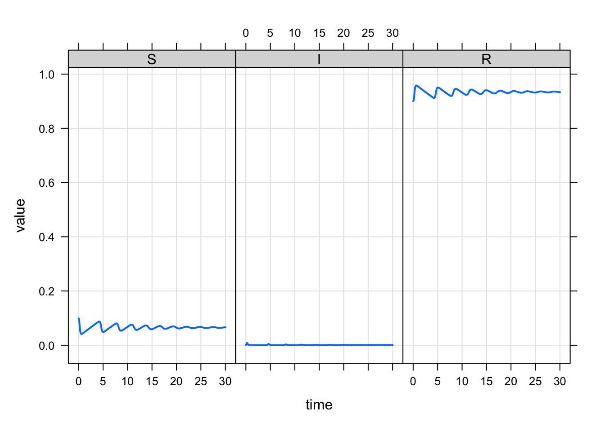
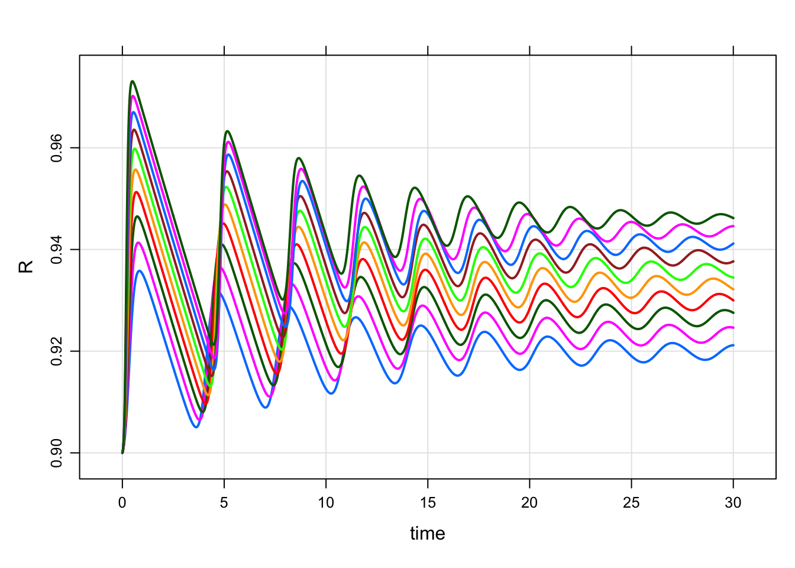
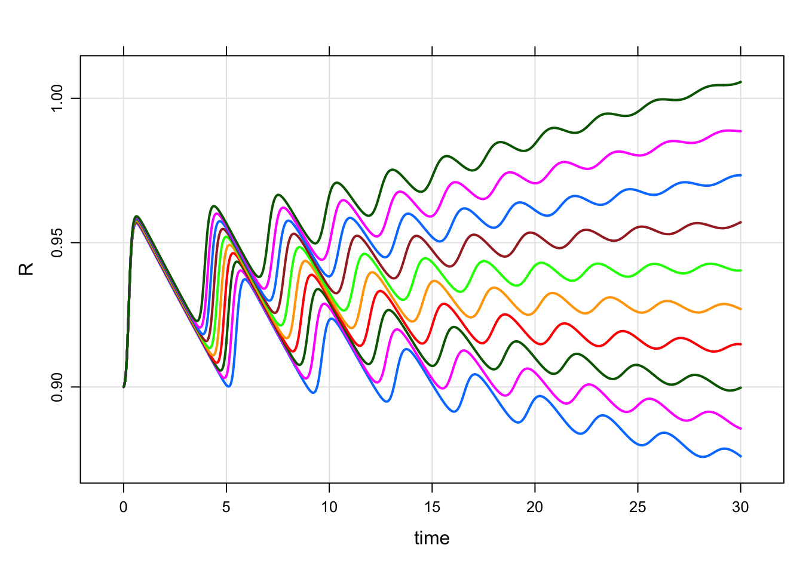
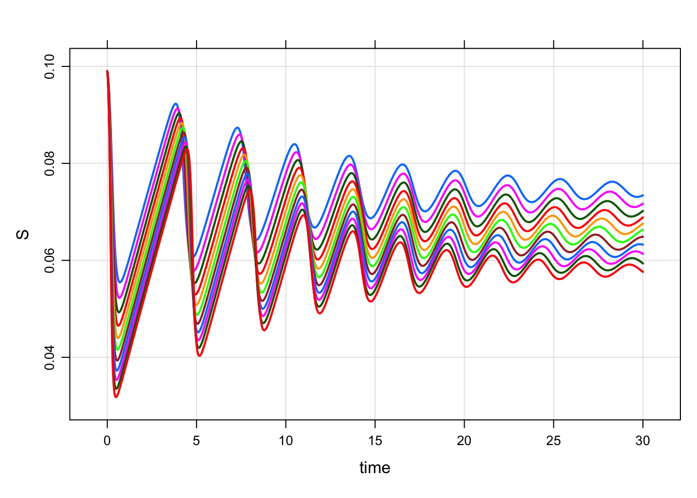

Explore the dynamics of the system for different values of the beta and b parameters by simulating and plotting trajectories as time series and in phase space (e.g., I vs. S). How the beta, B, and R0 related to the type of trajectories you get?



mrgsolve: mrgsolve.github.io | metrum research group: metrumrg.com